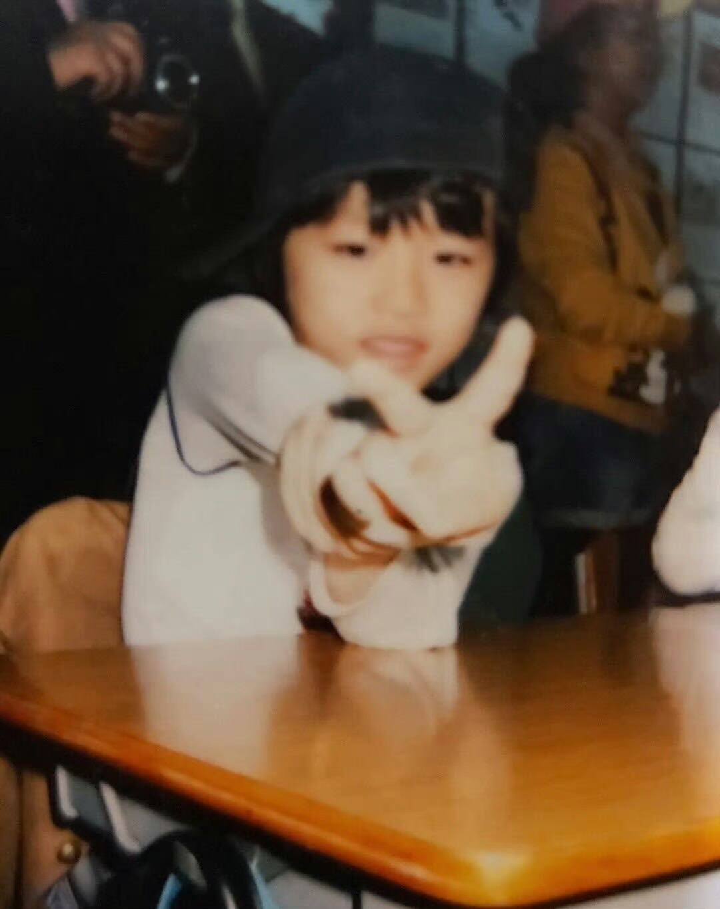
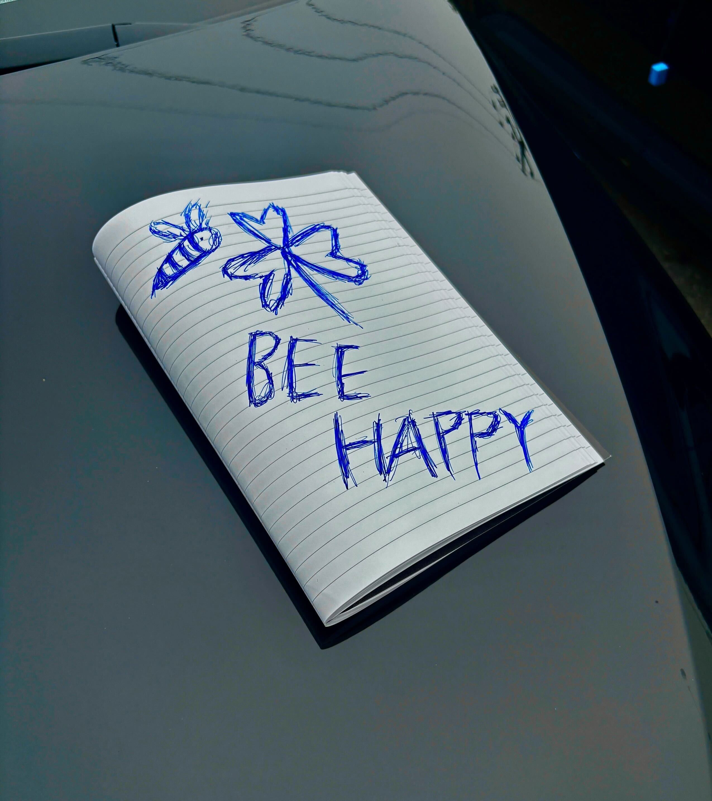

TAESAN
AN ARCHIVE OF EVERYTHING HIM.
TAESAN PERSONAL ARCHIVE
COLLECTING THE LITTLE THINGS
THAT MAKE HIM, HIM.


dear, taesan ♡
08 / 10
THREE SIDES
OF TAESAN.
INDEX / 001—003PERSONAL ARCHIVE
made of moments ↗
[01]WORK ↗
WORK ↗ON STAGE / IN THE STUDIO
[02]SELF ↗THE PERSON / THE THOUGHTS
[03]
DAILY ↗A RECORD OF ORDINARY DAYS
TAESAN DAILY © FAN-MADE ARCHIVENOT A FINISHED STORY.